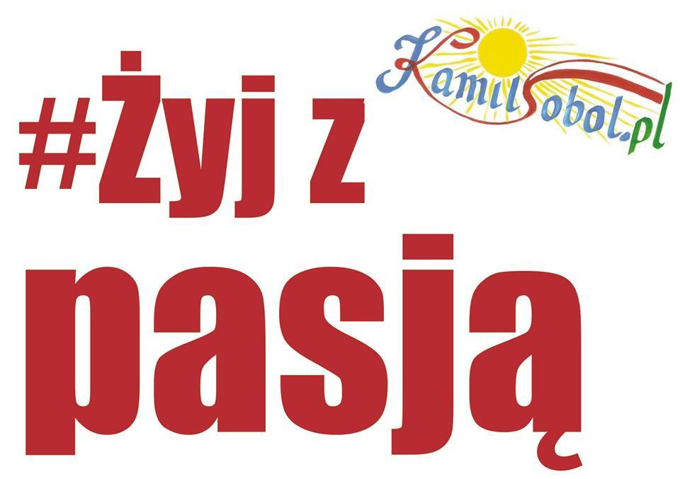

O sobie
Społecznik, sportowiec, oddany swojej pracy nauczyciel, podróżnik, prezes Łowickiej Akademii Sportu. Inicjator wielu akcji na rzecz propagowania sportu i rekreacji wśród dzieci, młodzieży(warsztaty, spływy i pikniki kajakowe). Ekspert koreańskiej sztuki walki i samoobrony Taekwondo ( Grandmaster 7 th dan black belt Chung Do Kwan Korea)Trener reprezentacji Polski na Akademickie Mistrzostwa Świata, Mistrzostwa Europy i Letnią Uniwersjadę w Korei. Trener i wychowawca 5 krotnych Mistrzów Polski w Taekwindo i pierwszego wicemistrza świata w parataekwondo (Lozanna, 2013). Jako uznany szkoleniowiec, na zaproszenie klubów sportowych i narodowych federacji prowadził seminaria dla sportowców w Nepalu, Bali i Kolumbii. Doskonale sprawdził się jako dyrektor organizacyjny imprez sportowych o zasięgu ogólnopolskim (czterokrotna organizacja Mistrzostw Polski Taekwondo wraz z MSiT (Łowicz, 2010, 2011, 2012, 2014) oraz organizacja finałów Ogólnopolskiej Olimpiady Młodzieży „Łódzkie 2013” w Łowiczu w dyscyplinie Taekwondo Olimpijskie). Zaangażowany w propagowanie kultury koreańskiej na Ziemi Łowickiej (tytuł honorowego Ambasadora Korei Południowej) We współpracy z Ambasadą Korei Południowej Centrum Kultury Koreańskiej w Warszawie zorganizował w Łowiczu Dni Kultury Koreańskiej (2009, 2011, 2013, 2014). Twórca Akcji Bezpieczna Kobieta (w latach 2010-2023 w bezpłatnych szkoleniach w zakresie samoobrony i pierwszej pomocy przedmedycznej wzięło udział 900 kobiet). Inicjator i główny koordynator projektu Budżetu Obywatelskiego: „Plaża nad Bzurą” (2017). Na terenie powiatu łowickiego wypromował turystykę kajakową (warsztaty kajakowe, stworzenie przystani kajakowych i szlaku kajakowego na Bzurze). Twórca społecznej akcji „Żyj z pasją” Zorganizował wyprawę „Kajakiem przez Bałtyk w 1050. rocznicę chrztu Polski (2016). Inicjator zakończonej sukcesem „Sztafety Bałtyckiej łodzią wiosłową przez Bałtyk. W 100. rocznicę odzyskania niepodległości”. Uhonorowany złotą odznaką AZS za osiągnięcia sportowe, Medalem Doktora Ferdinando Palasciano Barii, tytułem Łowiczanina Roku 2006, wyróżnieniem na Festiwalu Kolosy za Super Wyczyn Roku 2006, brązową odznaką „Zasłużony dla sportu” z Ministerstwa Sportu i Turystyki , nagrodą Oh Hyun Deuka, Prezydenta World Taekwondo Headquarters Kukkiwon Korea oraz nagrodą Prezydenta World Taekwondo Federation, dr Chungwon Choue - za pracę na rzecz rozwoju taekwondo na świecie. Odznaczony przez prezydentów RP Lecha Kaczyńskiego i Bronisława Komorowskiego Brązowym i Srebrnym Krzyżem Zasług za wyróżniającą się pracę edukacyjną i osiągnięcia sportowo-podróżnicze.Odznaczony przez Prezydenta Rzeczypospolitej Polskiej Andrzeja Dudę Krzyżem Kawalerskim Orderu Odrodzenia Polski za wybitne zasługi na rzecz rozwoju i upowszechniania sportu.
 Moja akcja społeczna #Żyj z pasją
#Żyj z pasją to akcja społeczna, której inicjatorem jest prezes Łowickiej Akademii Sportu, Kamil Sobol. Nadrzędnym jej celem jest prezentacja ludzi zwyczajnych, a jednak niezwyczajnych, którzy żyją w zgodzie z własną pasją i zainteresowaniami. Są wśród nich sportowcy, artyści „różnego kalibru” oraz inne osoby, które robią to, co kochają, realizują swoje marzenia i tym samym żyją ciekawie. Pasja dostarcza im satysfakcji zawodowej, ale i duchowego spełnienia. Na tej stronie prezentowane są osoby z bliższego i dalszego otoczenia, z sąsiedniego podwórka, jak również z odległych zakątków świata, które swoim życiem udowadniają, że warto posiadać pasję, warto dzielić się nią z innymi.